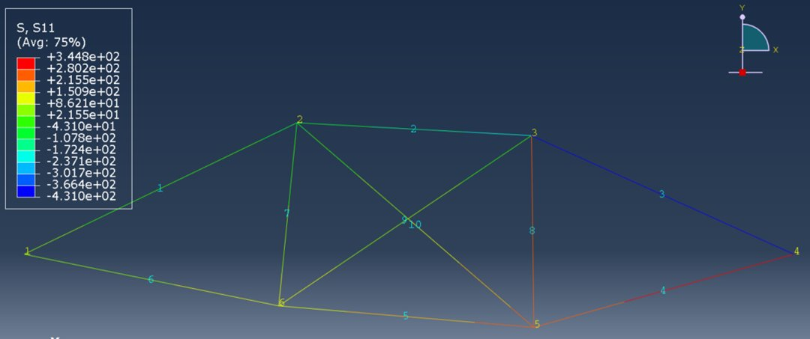
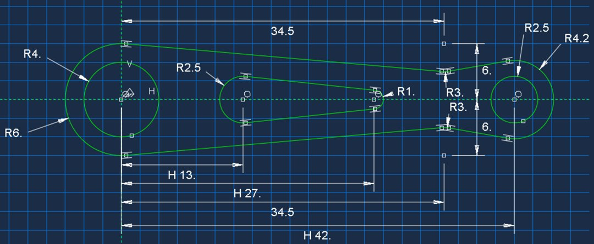

This report presents a finite element analysis (FEA) of a two-dimensional truss structure performed using Abaqus to determine member stresses and nodal displacements, followed by a fully stressed design optimization. Results from the initial analysis revealed that element stresses ranged from −431 psi to 345 psi when all cross-sectional areas were equal to 3.48 in². Displacement results confirmed correct boundary condition and load implementation through near-zero displacements at constrained nodes and higher displacements at nodes with applied forces. The fully stressed design procedure iteratively adjusted the cross-sectional areas of each member to bring element stresses closer to the allowable limit of 350 psi while adhering to a minimum area constraint of 0.1 in². After four iterations, most members achieved stresses near the allowable value, demonstrating convergence and the effectiveness of the design approach. The study validated that FEA can efficiently optimize truss performance by balancing material use, stress distribution, and design constraints.

This project investigates the structural performance and minimum mass design of a torque-arm subjected to combined horizontal and vertical loading. FEA in Abaqus was used to evaluate displacement and stress response while systematically refining the mesh and modifying geometric design variables. A preliminary Mechanics of Materials calculation first approximated the vertical deflection and maximum Von Mises stress, providing a baseline for comparison with numerical results. A convergence study using global element sizes of 0.62, 1.0, and 1.61 established a convergence rate of α = 0.67 and an exact vertical displacement of U₀ = 0.09735 cm at the load application point. An element type comparison showed that higher-order elements (6-node triangle and 8-node quadrilateral) yielded more accurate results than their linear counterparts due to improved interpolation of bending behavior. A minimum-mass optimization was then performed by adjusting geometric variables within provided bounds, achieving a reduced mass of 4.13751 kg while maintaining a maximum Von Mises stress of 245.4 MPa — just below the allowable limit of 250 MPa.
